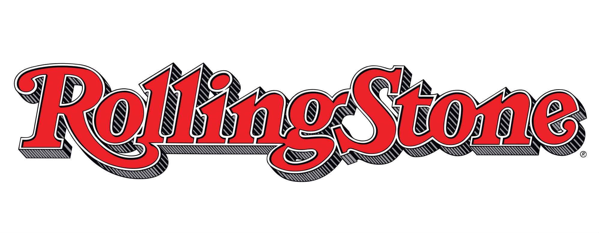
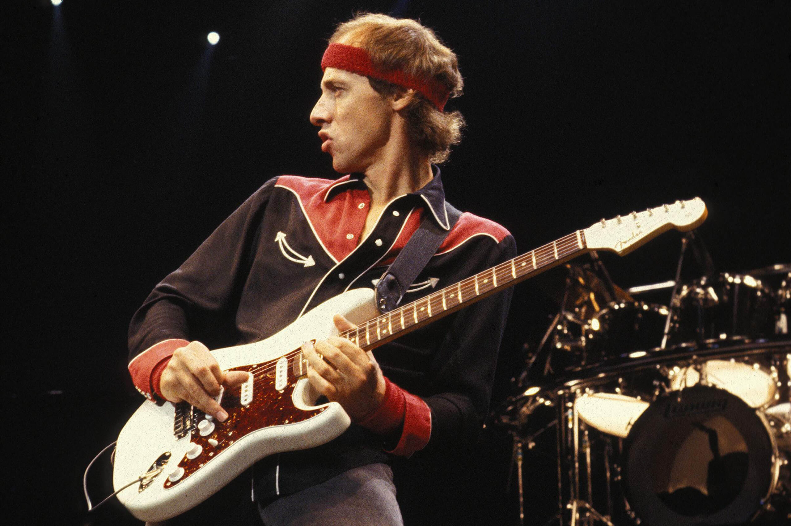

rolling stones

It was founded in San Francisco, California, in 1967 by Jann Wenner, and the music critic Ralph J. Gleason.
It was first known for its coverage of rock music and for political reporting by Hunter S. Thompson. In the 1990s, the magazine broadened and shifted its focus to a younger readership interested in youth-oriented television shows, film actors, and popular music.[2] It has since returned to its traditional mix of content, including music, entertainment, and politics.
Guitarworld
Guitar World is an American monthly music magazine for guitarists, published since July 1980.
It contains original interviews, album and gear reviews, and guitar and bass tablature of approximately five songs each month. The magazine is published 13 times per year (12 monthly issues and a holiday issue).
Formerly owned by Harris Publications, Future US bought the magazine in 2003. In 2012, NewBay Media bought the Music division of Future US.[2] The latter company also published a spin-off title, Guitar Legends, each issue of which typically combined past articles from Guitar World under a specific theme.
Click here for a list
Ranker
Ranker is a digital media company located in Los Angeles. The site features polls on entertainment, brands, sports, food and culture.
Ranker claims to be one of the largest databases of opinions with more than 1 billion votes gathered on over millions of subjective voters. Ranker has hundreds of thousands of lists of opinions.[2]
Click here for a list
Jimi hendrix
jimmy page
Eric clapton
David gilmour
Mark knopfler

Slash

Carlos santana